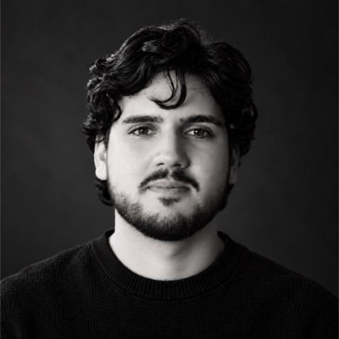

Felipe Rodrigues
Líder Técnico · Claro S.A. · Natal, BR
“Sistemas são construídos por pessoas. Meu trabalho é dar direção técnica clara e formar times que entregam com autonomia, em produtos usados por milhões.”
-
AtualLíder TécnicoClaro S.A.
Liderança técnica em plataformas de pagamento do grupo Claro, alinhando decisões de arquitetura, cultura de engenharia e estratégia de negócio.
-
2024 – 2026Arquiteto de Software e Tech LeadClaro Pay
Arquitetura e liderança técnica de uma plataforma financeira com 11M+ transações Pix por mês, em ecossistemas de pagamento B2C e B2B.
- Liderou a implementação end-to-end do Pix Automático, do desenho da arquitetura ao rollout em produção.
- Definiu arquiteturas cloud-native resilientes para serviços críticos de pagamento em ambiente regulado (BACEN).
- Projetou uma plataforma multi-tenant de auto-provisionamento AWS para clientes B2B.
- Atuou junto às áreas de negócio da Claro S.A., integrando pagamentos aos sistemas core e faturadores.
-
2023 – 2024Especialista Técnico IIIClaro Pay
- Evoluiu a arquitetura do banco digital, com integração segura a cartão, Pix, recarga e extrato.
- Liderança técnica de 10 engenheiros sêniores: padrões arquiteturais, design reviews e qualidade.
- Integração da carteira de cartões de crédito ao banco digital.
-
2022 – 2023Especialista TécnicoMJV Technology & Innovation
- Desenhou a nova arquitetura multi-package do app Claro Pay.
- Desenvolveu e lançou a Conta Turbinada.
- Mentorou mais de 5 desenvolvedores em TDD e Clean Architecture.
-
2021 – 2022Líder TécnicoLogAp I.T. Solutions
APIs REST com .NET 5 e Spring Boot, apps em Flutter, React Native e Xamarin.Forms, e pipelines de CI/CD para publicação automatizada nas lojas.
-
2019 – 2021Desenvolvedor Full StackLogAp I.T. Solutions
Desenvolvimento de ponta a ponta de aplicações web e mobile.
Áreas de atuação
Onde concentro minha especialidade técnica e de liderança.
Arquitetura de pagamentos
Pix, Pix Automático e processamento B2B, integrados aos sistemas core e faturadores da Claro.
Produto e inovação
Colaboração próxima com Produto, stakeholders e negócio. Origem em mobile e design com Flutter.
Cloud-native na AWS
Microsserviços e serverless com alta disponibilidade e baixa latência para serviços críticos.
Lambda · ECS · API Gateway · EventBridge · SQS · DynamoDBSistemas distribuídos
Arquitetura orientada a eventos, resiliência, observabilidade e infraestrutura como código.
Liderança técnica
Times construídos sobre ownership e excelência técnica, com mentoria, design reviews e padrões claros.
Ambientes regulados
Soluções aderentes ao BACEN, adequações regulatórias do Pix e governança técnica.
Recomendações
Como líder, destaca-se por ser um excelente ouvinte, demonstrando empatia pelas dificuldades do time e facilitando a comunicação entre diferentes áreas. Aliado a isso, possui uma visão arquitetural de software sólida e uma busca constante por inovação a cada entrega.
O Felipe é pró-ativo na resolução de problemas, gosta de inovar e não se atém ao que é pedido, sempre vai além, buscando fazer o melhor. É autodidata e responsável.
Vamos conversar.
Aberto a conversas sobre produto, engenharia e liderança técnica.